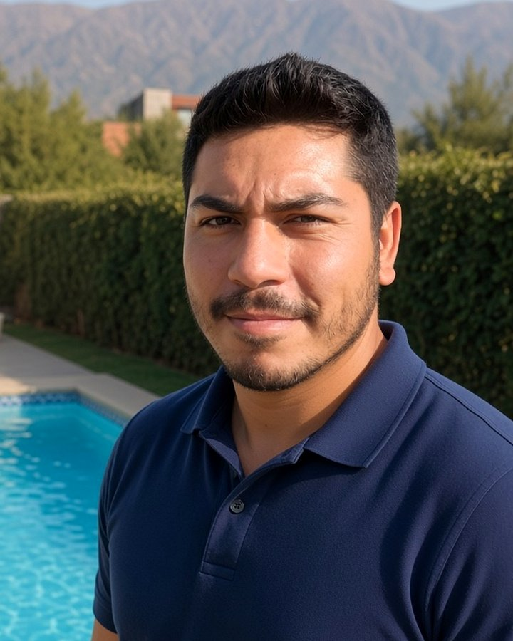

Mantención de piscinas · Santiago oriente
Tu piscina,
siempre lista.
¿Piscina turbia, con mal olor o el revestimiento gastado? Se la dejamos como nueva. Servicio semanal o quincenal para condominios y casas en Vitacura, Las Condes, La Reina y Peñalolén.
Qué incluye
Todo lo que necesita el agua, cada visita.
No es solo echar cloro. Cada visita parte midiendo, y al terminar le escribimos por WhatsApp contándole qué se hizo.
Equilibrio del agua
Medición y corrección de pH, cloro libre y alcalinidad. Dosificamos solo lo que falta.
Limpieza profunda
Fondo, paredes, skimmers y canaletas. Para piscinas verdes, tratamiento de choque y recuperación del agua.
Filtros y equipos
Retrolavado del filtro, revisión de bomba y cañerías. Avisamos antes de que algo falle.
Temporada invierno / verano
Puesta en marcha en primavera, mantención en verano e invernaje al cierre.
Piscinas de agua salada
Mantención de sistemas de sal, con revisión de la celda del clorador, que es donde suelen aparecer los problemas.
Cómo partimos
Tres pasos y queda andando.
Visita de diagnóstico
Vamos a ver la piscina, medimos el agua y revisamos el equipo. Sin costo y sin compromiso.
Propuesta clara
Le decimos qué necesita, cada cuánto y cuánto cuesta. Un solo valor mensual, sin sorpresas.
Visitas programadas
Frecuencia fija y día coordinado con usted. La hora depende de la ruta, así que le avisamos antes de llegar — y al terminar le contamos por WhatsApp cómo quedó.
Además de la mantención
Revestimientos y terminaciones.
Cuando el revestimiento está gastado, manchado o áspero al tacto, no hay mantención que lo arregle: el agua se ensucia más rápido, cuesta más mantener el equilibrio y la piscina se ve vieja aunque esté limpia.
Revestimiento nacional o Diamond Brite
Dos alternativas según el presupuesto y el resultado que busque. En la visita le explicamos la diferencia y qué conviene para su piscina.
Mosaicos
Instalación y reposición de mosaico, en la piscina completa o solo en la línea de flotación y los bordes.
Skin y microplaster
Terminaciones de grano fino, parejas y continuas, para quienes buscan una superficie más lisa.
Pintura de piscinas
La opción más económica cuando la estructura está sana y solo hace falta renovar el color.
El valor se define en la visita. Depende del tamaño de la piscina, del estado en que esté la superficie actual, del material que elija y de la preparación que haga falta antes de aplicar. Por eso no publicamos un precio: Javier va, la mide y le entrega el presupuesto.
Equipos y reparaciones
Lo que hace que el agua circule.
La mitad de los problemas de una piscina no están en el agua: están en la sala de máquinas. Si el equipo falla, ninguna dosificación alcanza.
Motor y bomba
Reparación o cambio cuando ya no da. Revisamos antes si tiene arreglo, para no cambiar lo que todavía sirve.
Cambio de arena del filtro
La arena se apelmaza con los años y deja de filtrar. Cambiarla a tiempo evita el agua turbia permanente.
Cajas de motor y eléctricas
Instalación de la caja del motor y del tablero eléctrico, para que el equipo quede protegido y seguro.
Calefactores solares o eléctricos
Instalación de sistemas de calefacción para estirar la temporada de baño varios meses.
¿Le baja el agua sin explicación? Cuando el nivel desciende más de lo que corresponde por evaporación, hacemos un estudio para determinar si hay una fuga y de dónde viene. Se aplica solo en ese caso — si el agua se mantiene, no hace falta.
Quién está detrás
Javier Crespo.

Lleva más de diez años manteniendo piscinas en el sector oriente de Santiago. Partió como parte todo el que emprende: con tres piscinas, su camioneta y las herramientas justas.
De ahí en adelante el oficio fue creciendo de la única forma que crece este rubro — clientes que se quedan y que lo recomiendan al vecino. Hoy organiza sus semanas por sectores para alcanzar a todas sus piscinas sin apurar ninguna, y sigue yendo él a cada visita.
Eso es lo que hay detrás de cada mensaje que le llega: una persona que conoce su piscina, que sabe cómo se comportó el agua el mes pasado y que responde con su nombre.
Para administradores
La piscina del condominio, sin reclamos.
Contrato mensual con visitas programadas y reporte por WhatsApp de cada intervención — para que nunca le pregunten algo que usted no pueda responder.
- Reporte por WhatsApp después de cada visita
- Valores del agua medidos en terreno
- Aviso a conserjería antes de cada visita
- Un solo interlocutor: Javier Crespo
Cómo trabajamos
Los tres números que definen su piscina.
Si alguno se sale de rango, el agua se pone turbia, irrita los ojos o empieza a dañar el equipo. Por eso los medimos siempre.
Dónde llegamos
Trabajamos por zonas.
Agrupamos las visitas cercanas para llegar seguido y avisar con anticipación.
¿Cada cuánto hay que hacer mantención?
En temporada alta, una vez por semana. Fuera de temporada, cada quince días suele bastar. En la visita de diagnóstico le decimos cuál corresponde según el volumen, el uso y la exposición al sol de su piscina.
¿Los productos están incluidos?
Sí, los productos de uso habitual van incluidos en el valor mensual. Si la piscina necesita un tratamiento fuerte —un choque por agua verde, por ejemplo— se lo cotizamos aparte y con su autorización antes de hacerlo.
¿Tengo que estar presente en cada visita?
No. Basta con dejar acceso al patio o coordinar con conserjería. Al terminar le escribimos por WhatsApp con lo que se hizo y cómo quedó el agua.
¿Cuánto cuesta revestir una piscina?
Depende del tamaño, del estado de la superficie actual y de la preparación que haga falta antes de aplicar. Por eso no publicamos precios: coordinamos una visita, medimos la piscina y le entregamos un presupuesto por escrito, sin costo ni compromiso.
¿Con qué material se hace el revestimiento?
Trabajamos con revestimiento nacional y con Diamond Brite, además de mosaicos, skin, microplaster y pintura. Cuál conviene depende del estado de la piscina, del uso que tenga y del presupuesto — eso se define en la visita, viendo la piscina.
¿Atienden piscinas de sal?
Sí. Trabajamos con sistemas de cloro, sal por electrólisis, bromo y UV. En las de sal revisamos además la celda del clorador, que es donde suelen aparecer los problemas.
Cuéntenos de su piscina.
La visita de diagnóstico no tiene costo. Escríbanos por WhatsApp y coordinamos esta semana.